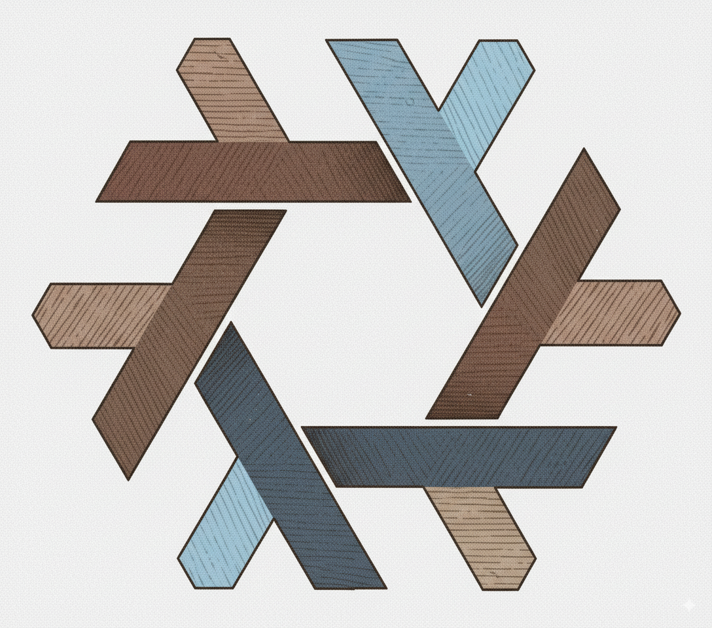

1 Reproducible Environments with Nix
1.1 Learning Outcomes
By the end of this chapter, you will:
- Understand why traditional environment managers (
venv,renv,conda) fail to achieve complete reproducibility. - Understand core Nix concepts: derivations, closures, the immutable Nix store, and hermetic builds.
- Understand the role of binary caches (like
rstats-on-nixand Cachix) in accelerating builds. - Install Nix, configure binary caches, and set up Positron and
direnvfor seamless project workflows.
1.2 Why Reproducibility? Why Nix?
To ensure that an analytical project is reproducible, you must control at least four distinct layers:
- The exact version of the programming language interpreter (Python 3.13.2, R 4.4.1, etc.).
- The exact versions of all language-specific libraries (
pandas,dplyr,scipy,ggplot2). - The exact versions of underlying system-level dependencies (C/C++ compilers,
libxml2,gdal,openssl, BLAS/LAPACK, Java). - The underlying hardware and operating system architecture.
In everyday practice, data scientists only manage the first or second point. When someone shares an analysis, you are typically told: “Just install Python 3.11 and pip install -r requirements.txt.” Then you run it, and it immediately crashes because a C library is missing, or a transitive dependency was updated yesterday and broke backwards compatibility.
1.2.1 Problems with Ad-Hoc Tools
Language-specific package managers solve only isolated pieces of the puzzle:
- Python’s
venvanduv: Manage Python wheels, but assume the host operating system provides all required dynamic shared libraries (.soor.dylibfiles). If your teammate is running Ubuntu 24.04 and you are on macOS or Arch Linux, different system library versions will lead to divergent behavior or build failures. - R’s
{renv}: Records CRAN package versions and dates in a lockfile, but relies on the host system compilers and libraries to compile packages from source. - Docker: Solves spatial distribution by packaging an entire Linux userland, but traditional
Dockerfilebuilds are imperative (apt-get update && apt-get install -y ...). Rebuilding the exact sameDockerfilesix months later will pull updated packages, introducing temporal drift (Malka, Zacchiroli, and Zimmermann 2024).
Traditional approaches fail to capture the complete dependency graph deterministically. This leads to the infamous “it works on my machine” syndrome.
1.2.2 Nix: A Declarative Solution
Nix takes a fundamentally different approach based on functional programming:
- Massive Repository (
nixpkgs): With over 120,000 packages,nixpkgsis currently the largest open-source software repository. It contains interpreters, development tools, system libraries, the entirety of CRAN and Bioconductor, and vast portions of PyPI. - Hermetic Isolation: Every package built by Nix is installed into its own isolated directory inside
/nix/store/. A package never references global directories like/usr/libor/usr/local/bin. - Cryptographic Pinning: Every package’s path in the Nix store includes a cryptographic hash of all its inputs (its source code, compiler flags, and every dependency down to the C standard library). If anything in the dependency chain changes, the hash changes.
- Deterministic Declarations: Instead of running imperative installation commands, you declare your desired environment in a plain-text configuration file. Anyone using that definition gets a bit-for-bit identical environment (Dolstra 2006).
1.3 Important Concepts
Before using Nix, let us establish the core conceptual foundations.
1.3.1 The Derivation
In Nix terminology, a derivation is:
A specification for running an executable on precisely defined input files to repeatably produce output files at uniquely determined file system paths.
Think of a derivation as a pure mathematical function:
\[f(\text{inputs}, \text{build steps}) \longrightarrow \text{output}\]
If the inputs (source files, compiler, dependencies, configuration flags) are identical, the output will be bit-for-bit identical.
Here is a simple derivation written in the Nix expression language:
let
pkgs = import (
fetchTarball "https://github.com/rstats-on-nix/nixpkgs/archive/2026-08-02.tar.gz"
) {};
in
pkgs.stdenv.mkDerivation {
name = "filtered_mtcars";
buildInputs = [ pkgs.gawk ];
dontUnpack = true;
src = ./mtcars.csv;
installPhase = ''
mkdir -p $out
awk -F',' 'NR==1 || $9=="1" { print }' $src > $out/filtered.csv
'';
}This snippet uses awk to filter a CSV file. Notice that gawk is explicitly listed as a dependency, and the output is written to a designated $out directory.
In this course, we will not write raw Nix derivations by hand. Instead, T (tlang) will automatically generate and evaluate these derivations for us behind the scenes!
1.3.2 The Nix Store and Hash Prefixes
All packages and derivations live under /nix/store/:
/nix/store/0agfca9pi5c93kqdac45jl9mxrwdgysx-r-4.4.1/
/nix/store/3x7y...-python3-3.13.2/
/nix/store/9k2p...-arrow-18.1.0/The 32-character hash prefix is computed from the package’s complete dependency graph. Because paths include this hash, multiple versions of the same library (e.g., Python 3.11, Python 3.12, and Python 3.13) can coexist on the same machine without conflict.
1.3.3 Component Closures
The closure of a package is the complete set of all packages, libraries, and files required to run it. If you copy a package and its entire closure to another machine running Nix, it is guaranteed to execute without needing any other software installed on that host.
1.3.4 The Hermetic Sandbox
When Nix builds a derivation, it does so in a hermetic sandbox: - Network access is disabled (except for derivations explicitly declared with a fixed cryptographic hash, such as downloading a source archive). - Environment variables are wiped clean; only explicitly declared variables exist. - System directories like /usr/include or /opt are invisible.
This guarantees that a build cannot secretly depend on a tool or file that happens to exist on your machine.
1.3.5 Binary Caches and Cachix
Because derivations are deterministic and identified by cryptographic hashes, Nix does not need to recompile software from source if someone has already built that exact hash. Nix queries binary caches (such as cache.nixos.org and rstats-on-nix.cachix.org) and downloads pre-built binaries directly into your store.
1.4 Setting Up Your Environment
Let us set up Nix and configure your workstation for the course.
1.4.1 1. Installing Nix
We strongly recommend the Determinate Systems Nix Installer, which works seamlessly across Linux, macOS, and Windows (via WSL2):
curl --proto '=https' --tlsv1.2 -sSf -L https://install.determinate.systems/nix | sh -s -- installFollow the prompts on screen, then restart your terminal. Verify the installation:
nix --version1.4.2 2. Configuring Binary Caches
To avoid compiling R packages and Python dependencies from source, configure the rstats-on-nix Cachix cache:
nix run nixpkgs#cachix use rstats-on-nixThis tells Nix to check https://rstats-on-nix.cachix.org for pre-built binaries.
1.4.3 3. Setting Up Positron and direnv
Positron is a next-generation data science IDE built on Code OSS by Posit. It has first-class support for both R and Python, with rich variable inspectors and plotting panes.
To make Positron automatically detect the R and Python interpreters managed by Nix:
Install
direnv:nix-env -iA nixpkgs.direnvHook
direnvinto your shell (addeval "$(direnv hook bash)"to your~/.bashrcoreval "$(direnv hook zsh)"to~/.zshrc).In any project root containing a
default.nixorflake.nix, create a.envrcfile containing:use flakeRun
direnv allow.Install the direnv extension in Positron. Now, whenever you open a project, Positron immediately activates the exact Python and R versions defined by your Nix configuration!
1.5 Summary
Nix solves the environment reproducibility problem at its root by treating software builds as pure, declarative derivations. In the next chapter, we will see how T leverages Nix to build polyglot pipelines without writing boilerplate glue code.
Dolstra, Eelco. 2006. “The Purely Functional Software Deployment Model.” PhD thesis, Utrecht University. https://edolstra.github.io/pubs/phd-thesis.pdf.
Malka, Julien, Stefano Zacchiroli, and Théo Zimmermann. 2024. “Reproducibility of Build Environments Through Space and Time.” In Proceedings of the 2024 ACM/IEEE 44th International Conference on Software Engineering: New Ideas and Emerging Results, 97–101. ICSE-NIER’24. ACM. https://doi.org/10.1145/3639476.3639767.